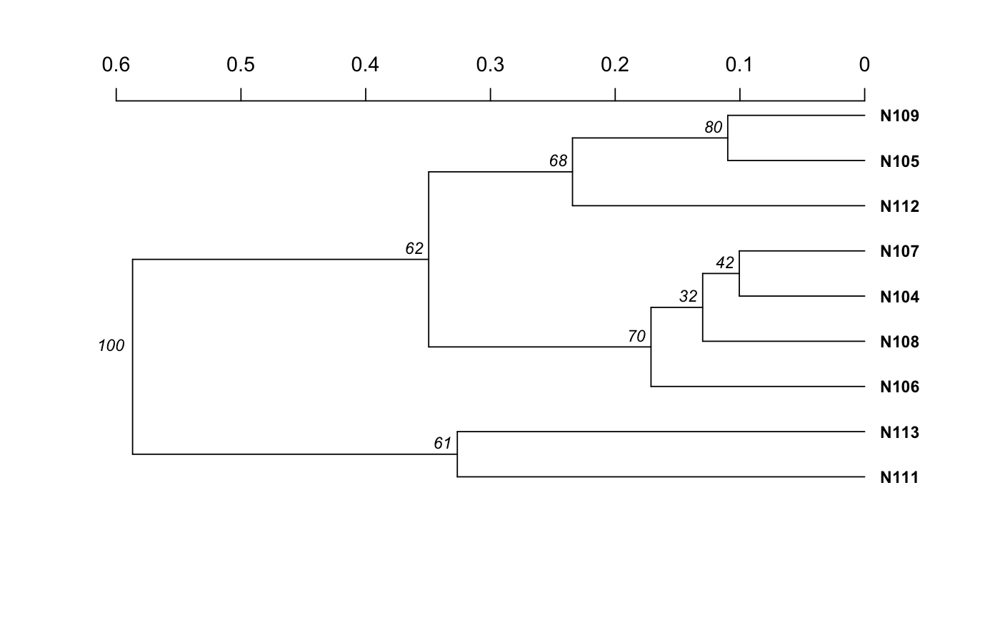

R/bootstraping.R
Calculate a dendrogram with bootstrap support using any distance applicable to genind or genclone objects.
aboot(x, strata = NULL, tree = "upgma", distance = "nei.dist", sample = 100, cutoff = 0, showtree = TRUE, missing = "mean", mcutoff = 0, quiet = FALSE, root = NULL, ...)
| x | a genind, genpop, genclone, genlight, snpclone or matrix, object. |
|---|---|
| strata | a formula specifying the strata to be used to convert x to a genclone object if x is a genind object. Defaults to NULL. See details. |
| tree | a text string or function that can calculate a tree from a distance matrix. Defaults to "upgma". Note that you must load the package with the function for it to work. |
| distance | a character or function defining the distance to be applied
to x. Defaults to |
| sample | An integer representing the number of bootstrap replicates Default is 100. |
| cutoff | An integer from 0 to 100 setting the cutoff value to return the bootstrap values on the nodes. Default is 0. |
| showtree | If |
| missing | any method to be used by |
| mcutoff | a value between 0 (default) and 1 defining the percentage of
tolerable missing data if the |
| quiet | if |
| root | is the tree rooted? This is a parameter passed off to
|
| ... | any parameters to be passed off to the distance method. |
an object of class phylo.
This function utilizes an internal class called
bootgen that allows bootstrapping of objects that
inherit the genind class. This is necessary due to the fact that columns in
the genind matrix are defined as alleles and are thus interrelated. This
function will specifically bootstrap loci so that results are biologically
relevant. With this function, the user can also define a custom distance to
be performed on the genind or genclone object.
strata. This argument is useful for when
you want to bootstrap by populations from a genind
object. When you specify strata, the genind object will be converted to
genpop with the specified strata.
prevosti.dist and diss.dist are exactly the
same, but diss.dist scales better for large numbers of
individuals (n > 125) at the cost of required memory.
missing = "ignore" to allow the distance function to handle any
missing data. See missingno for details on missing
data.bruvo.boot.
nei.dist edwards.dist
rogers.dist reynolds.dist
prevosti.dist diss.dist
bruvo.boot boot.phylo
dist.genpop dist
bootgen2genind bootgen
data(nancycats) nan9 <- popsub(nancycats, 9) set.seed(9999) # Generate a tree using nei's distance neinan <- aboot(nan9, dist = nei.dist)#> Warning: Infinite values detected.#> Warning: Infinite values detected.#> Warning: Infinite values detected.#> Warning: Infinite values detected.#> Warning: Infinite values detected.#> Warning: Infinite values detected.#> Warning: Infinite values detected.#> Warning: Infinite values detected.#> Warning: Infinite values detected.#> Warning: Infinite values detected.#> Warning: Infinite values detected.#> Warning: Infinite values detected.#> Warning: Infinite values detected.#> Warning: Infinite values detected.#> Warning: Infinite values detected.#> Warning: Infinite values detected.#> Warning: Infinite values detected.#> Warning: Infinite values detected.#> Warning: Infinite values detected.#> Warning: Infinite values detected.#> Warning: Infinite values detected.#> Warning: Infinite values detected.#> Warning: Infinite values detected.#> Warning: Infinite values detected.#> Warning: Infinite values detected.#> Warning: Infinite values detected.#> Warning: Infinite values detected.#> Warning: Infinite values detected.#> Warning: Infinite values detected.#> Warning: Infinite values detected.#> Warning: Infinite values detected.#> Warning: Infinite values detected.#> Warning: Infinite values detected.#> Warning: Infinite values detected.#> Running bootstraps: 100 / 100 #> Calculating bootstrap values... done.set.seed(9999) # Generate a tree using custom distance bindist <- function(x) dist(tab(x), method = "binary") binnan <- aboot(nan9, dist = bindist)#> Running bootstraps: 100 / 100 #> Calculating bootstrap values... done.# NOT RUN { # Distances from other packages. # # Sometimes, distance functions from other packages will have the constraint # that the incoming data MUST be genind. Internally, aboot uses the # bootgen class ( class?bootgen ) to shuffle loci, and will throw an error # The function bootgen2genind helps fix that. Here's an example of a function # that expects a genind class from above bindist <- function(x){ stopifnot(is.genind(x)) dist(tab(x), method = "binary") } # # Fails: # aboot(nan9, dist = bindist) ## Error: is.genind(x) is not TRUE # # Add bootgen2genind to get it working! # Works: aboot(nan9, dist = function(x) bootgen2genind(x) %>% bindist) # AFLP data data(Aeut) # Nei's distance anei <- aboot(Aeut, dist = nei.dist, sample = 1000, cutoff = 50) # Rogers' distance arog <- aboot(Aeut, dist = rogers.dist, sample = 1000, cutoff = 50) # This can also be run on genpop objects strata(Aeut) <- other(Aeut)$population_hierarchy[-1] Aeut.gc <- as.genclone(Aeut) setPop(Aeut.gc) <- ~Pop/Subpop Aeut.pop <- genind2genpop(Aeut.gc) set.seed(5000) aboot(Aeut.pop, sample = 1000) # compare to Grunwald et al. 2006 # You can also use the strata argument to convert to genpop inside the function. set.seed(5000) aboot(Aeut.gc, strata = ~Pop/Subpop, sample = 1000) # And genlight objects # From glSim: ## 1,000 non structured SNPs, 100 structured SNPs x <- glSim(100, 1e3, n.snp.struc=100, ploid=2) aboot(x, distance = bitwise.dist) # Utilizing other tree methods library("ape") aboot(Aeut.pop, tree = fastme.bal, sample = 1000) # Utilizing options in other tree methods myFastME <- function(x) fastme.bal(x, nni = TRUE, spr = FALSE, tbr = TRUE) aboot(Aeut.pop, tree = myFastME, sample = 1000) # }